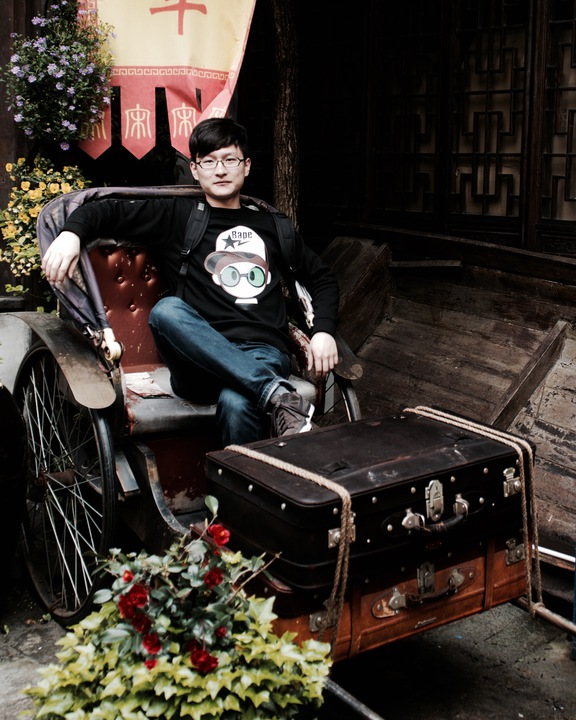

Cosmo Du (杜宇)

Ph.D. student of Zhejiang University
State Key Lab of CAD&CG
Expected to graduate on March, 2017
Contact: answeror [att] gmail [dot] com
Github: github.com/answeror
CV (Chinese): answeror.com/static/cv-cn.pdf
Live in: Hangzhou, China
Research interests: Deep Learning,
Computer Vision,
Sensor-based action recognition
(based on sEMG and IMU)
Skills: Strong in C++ and Python
Familiar with Caffe and MxNet